이 수업의 학습목표(LO)는 두 가지다. 하나는 라살리안 교육(Lasallian Education)의 기대사항과 규칙(expectations and routines)을 이해하는 것이고, 다른 하나는 올해 자신이 기르고 싶은 가치와 태도(values and qualities)를 스스로 생각해 보는 것이다. 학교 표어는 'Enter to Learn, Leave to Serve'(배우러 들어와, 봉사하러 나간다)이고 핵심 가치는 Faith(믿음)·Service(봉사)·Community(공동체) 세 가지다.
첫 활동은 Lasallian Bingo다. 교실을 돌아다니며 여러 친구와 이야기해서 16칸 문장 전부에 해당하는 사람 이름을 적고, 그 답에 대해 후속 질문(follow-up question)을 하나 더 해서 무슨 뜻인지 이해해야 한다. 학생이 16명 이상인 반은 칸마다 다른 사람을 써야 하고, 16명보다 적은 반은 같은 사람을 최대 두 번까지만 쓸 수 있다. 다 채우면 그 종이를 연습장(exercise book)에 붙인다.
교실 규칙의 뼈대는 3Es — Enter(들어오기)·Engage(참여하기)·Exit(나가기)다. Enter는 밖에서 조용히 줄을 서서 선생님께 인사하고, 차분히 들어와 자리에 앉아 가방을 바닥에 두고, LeDU 연습장을 책상에 꺼내 수업 제목과 날짜를 쓴 뒤, 조용히 스타터 활동을 시작하는 순서다. Exit는 하던 일을 멈추고 선생님 지시를 듣고, 물건을 정리하고, 의자를 밀어 넣은 뒤 조용히 의자 뒤에 서서 해산 허락을 기다리는 것까지다.
Engage에는 세부 규칙이 여러 개 있다. 받은 코드로 이 LeDU 수업의 구글 클래스룸(Google Classroom)에만 들어가야 하고(다른 반에 잘못 들어가지 않도록 확인), 7~10학년은 연습장을 꼭 가지고 다니며 표지에 이름을 쓴다. 손 신호(hand signals)는 손가락 하나(☝)면 화장실, 둘(✌)이면 질문·발표이며, 화장실은 한 번에 한 명만 간다. 가방은 교실 뒤나 책상 아래에 두고 복도에 두면 안 된다.
규칙을 어겼을 때는 리셋 버튼(Reset Button) 단계를 밟는다. 먼저 반 전체에 부드럽게 말로 알려주고(Verbal Reminder), 그다음은 조용히 따로 이야기하고(Private Chat), 그래도 안 되면 집에 연락(Contact Home)해서 가정과 함께 돕는 방식이다. 벌이 아니라 다시 시작하게 도와주는 절차라는 점이 핵심이다.
✍️ 꼭 알아야 하는 것
3Es(Enter·Engage·Exit) 각 단계에서 해야 할 행동 순서 — 특히 들어올 때 연습장에 제목과 날짜 쓰기, 나갈 때 해산 허락 전까지 자리 뒤에 서 있기.
손 신호 두 가지(☝ 화장실 / ✌ 질문·발표)와 가방·연습장 보관 규칙.
📚 이 자료의 핵심 단어
Lasallian Education라살리안 교육믿음·봉사·공동체를 바탕으로 하는 라살 학교의 가치 교육 과목이다.
Learning Objective (LO)학습 목표이 수업이 끝났을 때 학생이 알아야 하거나 할 수 있어야 하는 것을 적은 문장이다.
expectations기대 행동, 지켜야 할 규칙수업에서 학생이 지켜야 할 행동과 학습의 기준이다.
routines수업 절차, 정해진 순서들어오기·나가기처럼 매 수업마다 똑같이 반복하는 정해진 순서다.
The 3Es (Enter, Engage, Exit)3E (입실·참여·퇴실)교실에 들어오는 법, 수업에 참여하는 법, 나가는 법의 세 단계를 말한다.
starter activity도입 활동수업 시작하자마자 조용히 하는 짧은 첫 활동이다.
exercise book연습장, 학습 공책수업 제목과 날짜, 수업 내용을 적는 공책이다.
reset button리셋 버튼 (행동 교정 단계)말로 알려주기 → 조용히 개인 면담 → 가정 연락으로 이어지는 3단계 행동 교정 방식이다.
dismissed(수업이) 끝나 나가도 좋다는 허락을 받다선생님이 교실을 나가도 된다고 정식으로 허락하는 것이다.
Service Learning봉사 학습지역사회의 실제 필요를 채우는 봉사를 계획해 그 과정에서 배우는 수업이다.
advocacy옹호, 알리고 지지를 이끌어내는 활동사회 문제를 사람들에게 알리고 지지를 얻어내려는 활동이다.
Call to Action행동 촉구 메시지듣는 사람에게 이 문제를 위해 무엇을 하라고 분명히 요청하는 말이다.
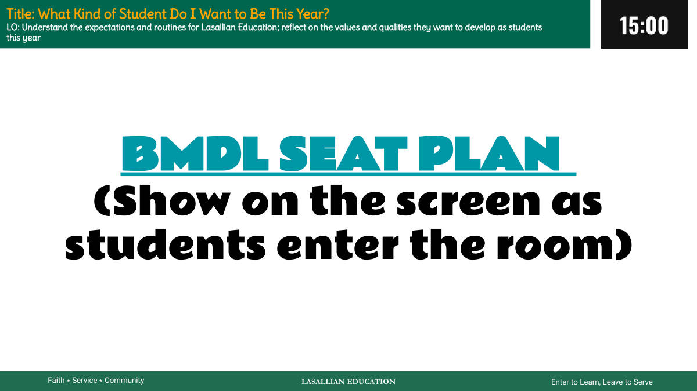
1쪽 · 올해 나는 어떤 학생이 되고 싶은가
라살리안 교육 배우러 들어와, 섬기러 나간다 믿음 ⭑ 봉사 ⭑ 공동체 제목: 올해 나는 어떤 학생이 되고 싶은가? 학습 목표(LO): 라살리안 교육의 기대와 규칙을 이해한다. 올해 학생으로서 기르고 싶은 가치와 자질을 돌아본다. BMDL 자리 배치도 (학생들이 교실에 들어올 때 화면에 띄운다)
이 수업의 뼈대는 라살리안 교육의 세 낱말, 믿음·봉사·공동체다.
이 시간에 할 일은 두 가지다. 학교의 기대와 규칙을 이해하는 것, 그리고 올해 어떤 학생이 되고 싶은지 스스로 돌아보는 것이다.
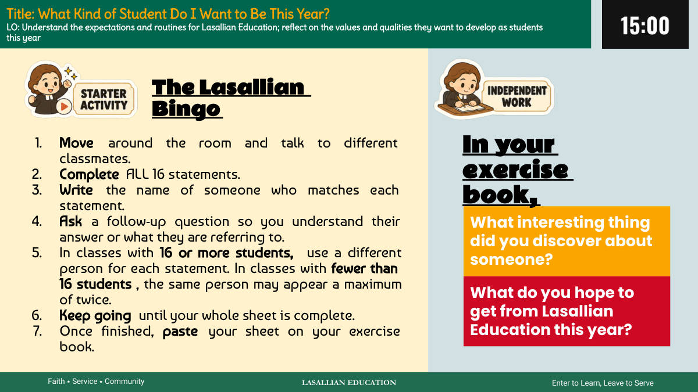
2쪽 · 라살리안 빙고 활동 안내
라살리안 교육 배우러 들어와, 섬기러 나간다 믿음 ⭑ 봉사 ⭑ 공동체 제목: 올해 나는 어떤 학생이 되고 싶은가? 학습 목표: 라살리안 교육의 기대와 규칙을 이해한다. 올해 학생으로서 기르고 싶은 가치와 자질을 돌아본다. 라살리안 빙고 1. 교실을 돌아다니며 여러 친구와 이야기한다. 2. 16개 문장을 모두 채운다. 3. 각 문장에 맞는 사람의 이름을 적는다. 4. 추가 질문을 해서 그 친구의 답이나 말한 내용을 이해한다. 5. 학생이 16명 이상인 반에서는 문장마다 다른 사람을 쓴다. 16명보다 적은 반에서는 같은 사람을 최대 두 번까지 쓸 수 있다. 6. 종이 전체가 다 찰 때까지 계속한다. 7. 다 하면 종이를 연습장(exercise book)에 붙인다. 연습장에: 누군가에 대해 알게 된 흥미로운 점은 무엇인가? 올해 라살리안 교육에서 무엇을 얻기를 바라는가?
빙고 칸마다 조건에 맞는 친구의 이름을 적고, 반드시 추가 질문까지 해서 그 답의 내용을 이해해야 한다.
반 인원이 16명 이상이면 이름이 겹치면 안 되고, 16명 미만이면 같은 사람을 두 번까지만 쓸 수 있다.
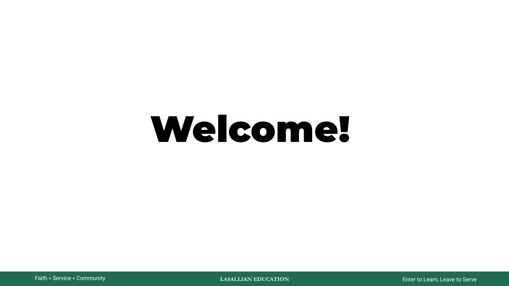
3쪽 · 라살리안 교육 소개
라살리안 교육 배우러 들어와서, 섬기러 나간다 믿음 ⭑ 봉사 ⭑ 공동체 환영합니다!
라살리안 학교의 표어는 '배우러 들어와 섬기러 나간다'로, 배운 것을 남을 위해 쓰라는 뜻이다.
이 학교가 내세우는 세 가지 가치는 믿음(Faith)·봉사(Service)·공동체(Community)다.
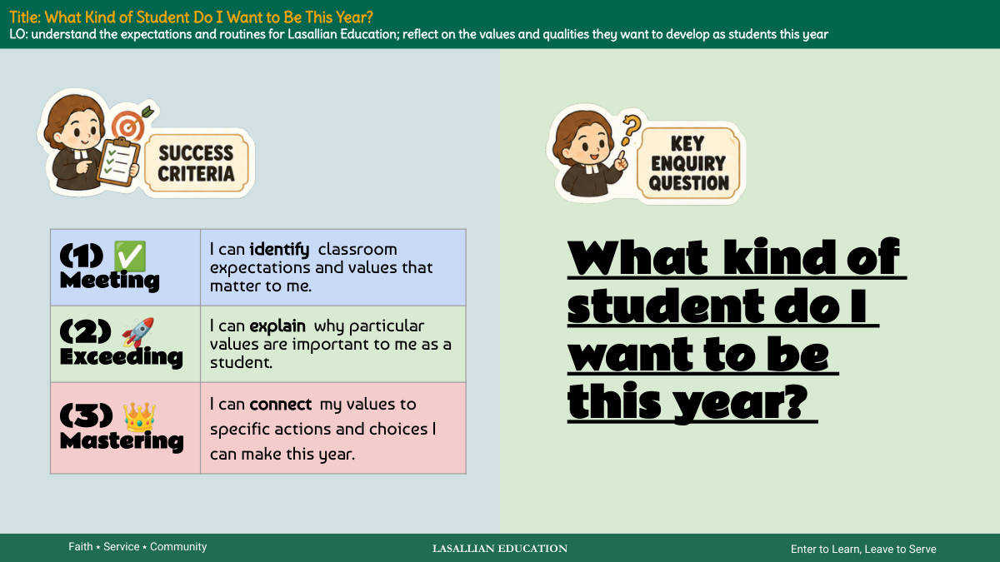
4쪽 · 올해 나는 어떤 학생이 되고 싶은가
라살리안 교육 배우기 위해 들어와서, 섬기기 위해 나간다 믿음 ⭑ 봉사 ⭑ 공동체 (1) ✅ 도달 나는 교실의 기대와 가치 중 나에게 중요한 것을 찾아낼 수 있다. (2) 🚀 넘어섬 나는 특정 가치가 왜 나에게 학생으로서 중요한지 설명할 수 있다. (3) 👑 숙달 나는 나의 가치를 올해 내가 할 수 있는 구체적인 행동과 선택에 연결할 수 있다. 제목: 올해 나는 어떤 학생이 되고 싶은가? 학습목표(LO): 라살리안 교육의 기대와 규칙(루틴)을 이해한다; 올해 학생으로서 기르고 싶은 가치와 자질을 돌아본다. 올해 나는 어떤 학생이 되고 싶은가?
학습 단계가 3칸으로 나뉜다 — 찾아내기(도달) → 왜 중요한지 설명하기(넘어섬) → 구체적 행동에 연결하기(숙달). 뒤로 갈수록 요구가 높아진다.
학교의 세 가지 핵심 가치는 믿음·봉사·공동체이고, 표어는 '배우기 위해 들어와서, 섬기기 위해 나간다'다.
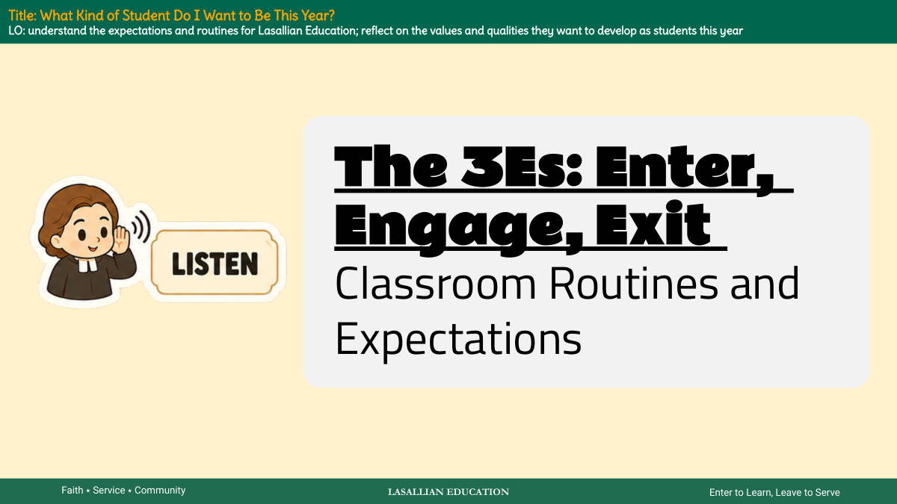
5쪽 · 1과 시작 — 라살 교육 소개
LASALLIAN EDUCATION (라살 교육) 배우기 위해 들어오고, 섬기기 위해 나간다. 믿음 ⭑ 봉사 ⭑ 공동체 제목: 나는 올해 어떤 학생이 되고 싶은가? 학습목표(LO): 라살 교육의 기대사항과 규칙(루틴)을 이해한다. 올해 학생으로서 기르고 싶은 가치와 자질을 되돌아본다. 3E: Enter(들어가기), Engage(참여하기), Exit(나가기) 교실 규칙과 기대사항
이 수업의 목표는 두 가지다. 학교의 기대사항·규칙을 이해하는 것, 그리고 올해 어떤 학생이 되고 싶은지 스스로 생각해 보는 것이다.
라살 교육의 세 가지 핵심 가치는 믿음(Faith)·봉사(Service)·공동체(Community)이며, 수업 진행의 틀은 3E(Enter·Engage·Exit)다.
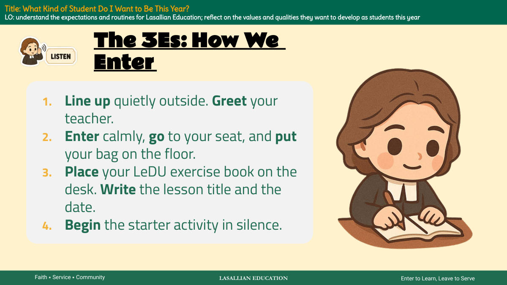
6쪽 · 3E — 들어올 때
라살리안 교육 배우러 들어와, 섬기러 나간다 믿음 ⭑ 봉사 ⭑ 공동체 제목: 나는 올해 어떤 학생이 되고 싶은가? 학습목표(LO): 라살리안 교육의 기대사항과 규칙적인 절차를 이해한다. 올해 학생으로서 기르고 싶은 가치와 자질을 돌아본다. 3E: 우리가 들어오는 방법 1. 밖에서 조용히 줄을 선다. 선생님께 인사한다. 2. 차분하게 들어와 자리로 가고, 가방은 바닥에 둔다. 3. LeDU 연습장을 책상 위에 놓는다. 수업 제목과 날짜를 쓴다. 4. 스타터 활동을 조용히 시작한다.
교실에 들어오는 순서가 4단계로 정해져 있다 — 줄서기·인사 → 차분히 착석·가방은 바닥 → 연습장 꺼내 제목과 날짜 쓰기 → 조용히 스타터 활동 시작.
이 수업의 목표는 라살리안 교육의 기대사항과 절차를 이해하고, 올해 기르고 싶은 가치와 자질을 스스로 돌아보는 것이다.
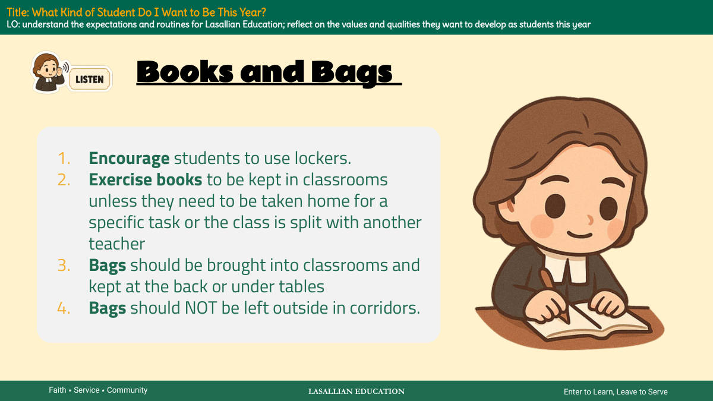
7쪽 · 책과 가방 규칙
라살리안 교육 배우러 들어와, 섬기러 나간다 믿음 ⭑ 봉사 ⭑ 공동체 제목: 나는 올해 어떤 학생이 되고 싶은가? 학습목표(LO): 라살리안 교육의 기대사항과 규칙을 이해한다. 올해 학생으로서 기르고 싶은 가치와 자질을 돌아본다 책과 가방 1. 학생들이 사물함을 쓰도록 권한다. 2. 연습장(공책)은 교실에 둔다. 단 특정 과제 때문에 집으로 가져가야 하거나 반이 다른 선생님과 나뉘는 경우는 예외다. 3. 가방은 교실 안으로 가지고 들어와 뒤쪽이나 책상 밑에 둔다. 4. 가방을 복도에 내놓아 두면 안 된다.
연습장은 교실에 두는 것이 원칙이고, 과제나 분반 수업 때만 집에 가져갈 수 있다.
가방은 교실 뒤쪽이나 책상 밑에 두며, 복도에 두는 것은 금지다.
8쪽 · 구글 클래스룸 가입하기
라살리안 교육 배우러 들어와, 섬기러 나간다 믿음 ⭑ 봉사 ⭑ 공동체 제목: 나는 올해 어떤 학생이 되고 싶은가? 학습목표: 라살리안 교육의 기대사항과 규칙을 이해한다. 올해 학생으로서 기르고 싶은 가치와 자질을 되돌아본다 3E: 우리가 참여하는 방법 구글 클래스룸 💻 1. 받은 코드를 써서, 이 LeDU 수업의 구글 클래스룸에만 가입한다. 2. 맞는 반에 들어가는지 다시 확인한다. 다른 반에는 절대 가입하지 않는다.
선생님이 준 코드로 이 LeDU 수업의 구글 클래스룸에만 가입한다
가입 전에 반이 맞는지 두 번 확인하고, 다른 반에는 들어가지 않는다
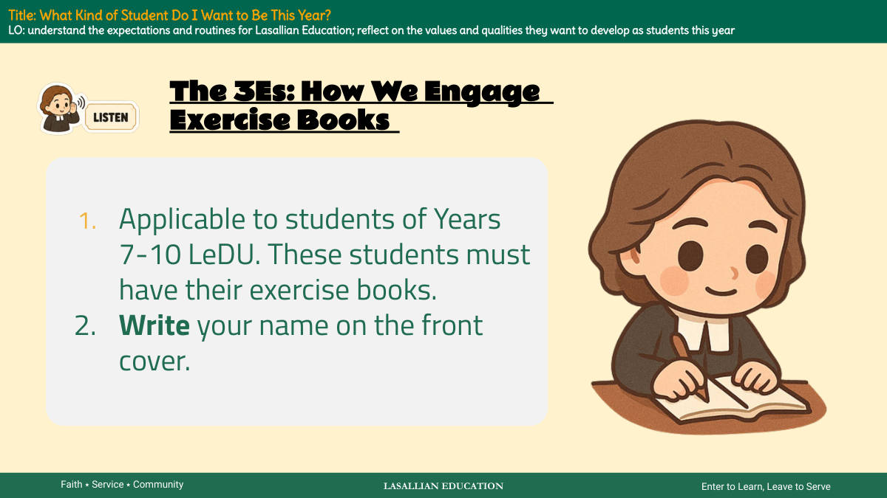
9쪽 · 라살리안 교육과 3E — 연습장 규칙
LASALLIAN EDUCATION (라살리안 교육) 배우기 위해 들어오고, 섬기기 위해 나간다 믿음 ⭑ 봉사 ⭑ 공동체 제목: 올해 나는 어떤 학생이 되고 싶은가? 학습목표(LO): 라살리안 교육의 기대사항과 규칙적인 생활방식을 이해한다. 올해 학생으로서 기르고 싶은 가치와 자질을 돌아본다. 3E: 우리가 참여하는 방법 연습장(Exercise Books) 1. Years 7-10 LeDU 학생에게 해당한다. 이 학생들은 반드시 자신의 연습장을 갖고 있어야 한다. 2. 앞표지에 자기 이름을 쓴다.
학교의 세 가지 핵심 가치는 믿음·봉사·공동체다.
7~10학년 LeDU 학생은 연습장을 반드시 챙기고, 앞표지에 이름을 써야 한다.
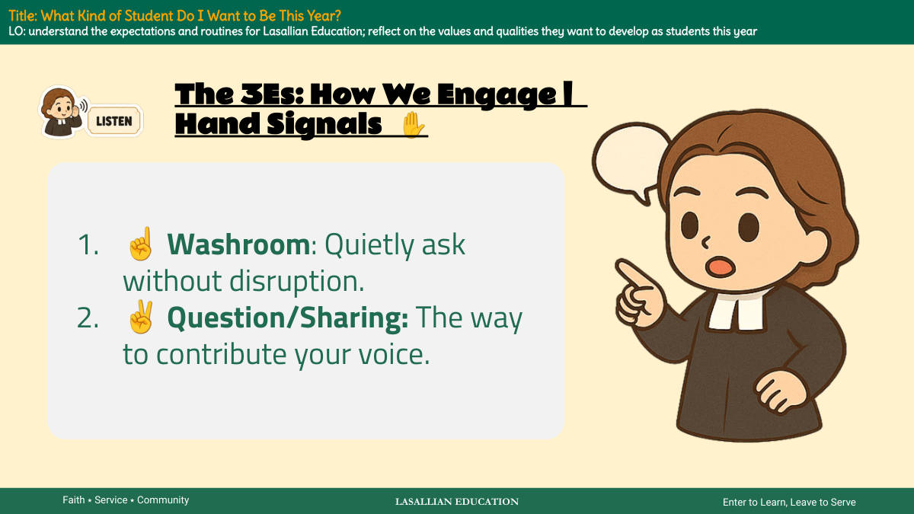
10쪽 · 라살 교육과 손 신호
라살 교육 배우러 들어와, 섬기러 나간다 믿음 ⭑ 봉사 ⭑ 공동체 제목: 나는 올해 어떤 학생이 되고 싶은가? 학습목표: 라살 교육의 기대사항과 규칙을 이해한다. 올해 학생으로서 기르고 싶은 가치와 자질을 돌아본다. 3E: 우리가 참여하는 방식 손 신호 ✋ 1. ☝ 화장실: 수업을 방해하지 않고 조용히 요청한다. 2. ✌ 질문/발표: 자기 의견을 말하는 방법이다.
학교 표어는 '배우러 들어와, 섬기러 나간다'이고, 핵심 가치는 믿음·봉사·공동체 세 가지다.
말로 끼어들지 않고 손가락 신호로 표시한다. 손가락 하나는 화장실, 둘은 질문이나 발표다.
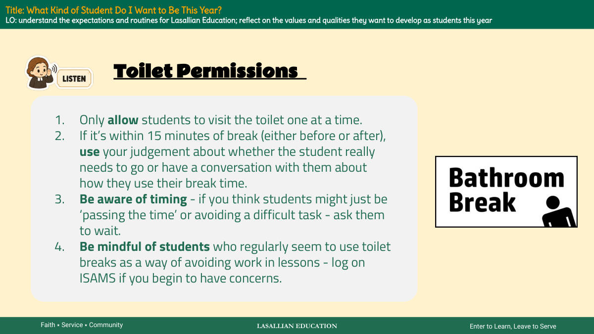
11쪽 · 화장실 이용 규칙
라살리안 교육 배우러 들어와, 섬기러 나간다 믿음 ⭑ 봉사 ⭑ 공동체 제목: 올해 나는 어떤 학생이 되고 싶은가? 학습목표(LO): 라살리안 교육의 기대사항과 일과를 이해한다. 올해 학생으로서 기르고 싶은 가치와 자질을 돌아본다. 화장실 허가 1. 학생은 한 번에 한 명씩만 화장실에 가게 한다. 2. 쉬는 시간 앞뒤 15분 이내라면, 학생이 정말 가야 하는지 판단하거나 쉬는 시간을 어떻게 쓰는지 학생과 이야기를 나눈다. 3. 시간대를 살핀다 — 학생이 그저 '시간을 때우거나' 어려운 과제를 피하려는 것 같으면 기다리라고 한다. 4. 수업 중 일을 피하려고 화장실을 자주 쓰는 학생을 눈여겨본다. 걱정이 되기 시작하면 ISAMS에 기록한다.
화장실은 한 번에 한 명만 가고, 쉬는 시간 앞뒤 15분 이내면 선생님이 판단해서 기다리게 할 수 있다.
과제를 피하려고 화장실을 자주 쓰면 선생님이 ISAMS(학교 기록 시스템)에 기록한다.
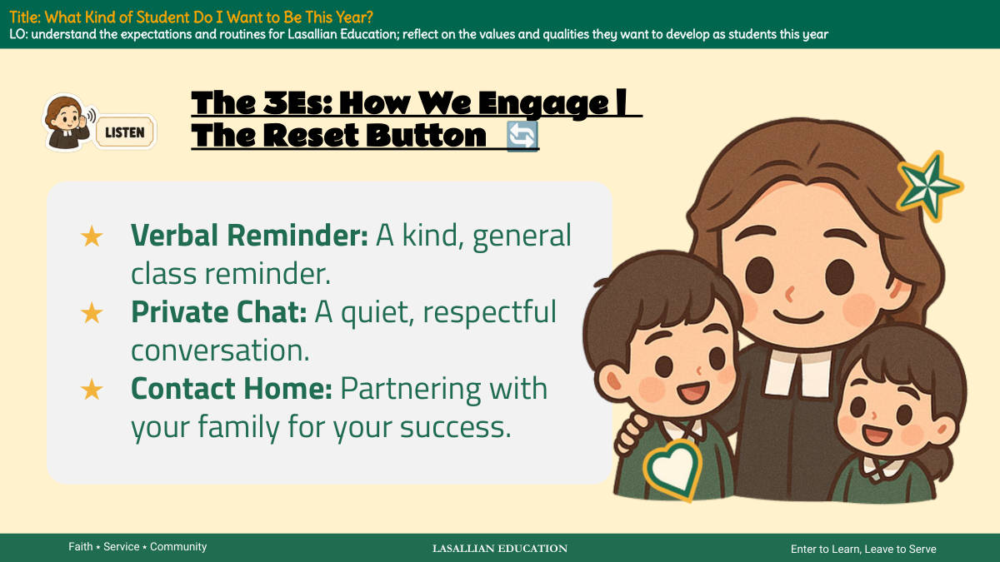
12쪽 · 3E와 리셋 버튼
라살리안 교육 배우러 들어와서, 섬기러 나간다 신앙 ⭑ 봉사 ⭑ 공동체 제목: 나는 올해 어떤 학생이 되고 싶은가? 학습목표(LO): 라살리안 교육의 기대사항과 일과를 이해한다. 올해 학생으로서 기르고 싶은 가치와 자질을 돌아본다. 3E: 우리가 참여하는 방법 리셋 버튼 🔄 ★말로 하는 알림: 친절하고 전체를 향한 학급 알림이다. ★따로 이야기: 조용하고 예의를 갖춘 대화다. ★집에 연락: 너의 성공을 위해 가족과 손잡는 것이다.
문제가 생기면 바로 벌을 주는 것이 아니라 '리셋 버튼'을 눌러 다시 시작하게 하는 방식이다.
알림은 세 단계로 올라간다 — 말로 하는 알림 → 따로 이야기 → 집에 연락이다.
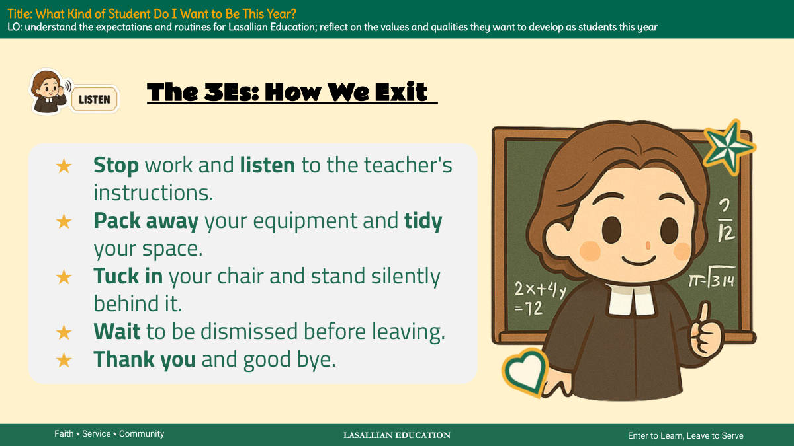
13쪽 · 3E 규칙: 나가는 법
라살리안 교육 배우러 들어와서, 섬기러 나간다 믿음 ⭑ 봉사 ⭑ 공동체 제목: 나는 올해 어떤 학생이 되고 싶은가? 학습목표: 라살리안 교육의 기대사항과 규칙을 이해한다. 올해 학생으로서 기르고 싶은 가치와 자질을 돌아본다. 3E: 우리가 나가는 방법 ★ 하던 일을 멈추고 선생님의 지시를 듣는다. ★ 준비물을 치우고 자기 자리를 정돈한다. ★ 의자를 밀어 넣고 그 뒤에 조용히 선다. ★ 나가라는 말을 들을 때까지 기다린다. ★ 감사 인사와 작별 인사를 한다.
3E 중 '나가기(Exit)' 단계다. 수업이 끝날 때 지켜야 할 다섯 가지 순서를 정해 놓았다.
마음대로 먼저 나가지 않는다. 자리를 정돈하고 의자 뒤에 조용히 선 뒤, 선생님이 보내 줄 때까지 기다린다.
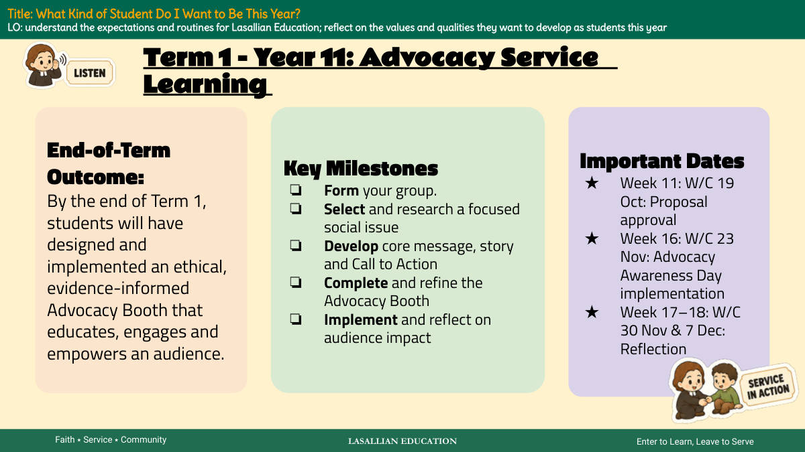
14쪽 · 1학기 학습 성과와 일정
라살리안 교육 (LASALLIAN EDUCATION) 배우러 들어와, 섬기러 나간다 (Enter to Learn, Leave to Serve) 믿음 ⭑ 봉사 ⭑ 공동체 제목: 나는 올해 어떤 학생이 되고 싶은가? 학습목표(LO): 라살리안 교육의 기대와 일과를 이해한다; 올해 학생으로서 기르고 싶은 가치와 자질을 되돌아본다 1학기 - 11학년: 애드보커시(옹호) 봉사
학기말 학습 성과 1학기가 끝날 때까지 학생들은 청중을 교육하고, 참여시키고, 힘을 주는 윤리적이고 근거에 기반한 애드보커시 부스를 설계하고 실행하게 된다.
주요 이정표 ❏ 모둠을 만든다. ❏ 초점을 맞춘 사회 문제를 고르고 조사한다. ❏ 핵심 메시지, 이야기, 행동 촉구(Call to Action)를 만든다. ❏ 애드보커시 부스를 완성하고 다듬는다. ❏ 실행하고 청중에게 준 영향을 되돌아본다.
중요한 날짜 ★ 11주차: 10월 19일 주 — 제안서 승인 ★ 16주차: 11월 23일 주 — 애드보커시 인식의 날 실행 ★ 17~18주차: 11월 30일 및 12월 7일 주 — 성찰
1학기의 최종 결과물은 '애드보커시 부스'다. 윤리적이고 근거에 기반해야 하며, 청중을 교육·참여·역량강화하는 것이 목표다.
이정표는 모둠 구성 → 사회 문제 조사 → 핵심 메시지와 행동 촉구 개발 → 부스 완성 → 실행 및 성찰 순서로 진행된다.
날짜는 3개만 기억하면 된다. 10월 19일 주 제안서 승인, 11월 23일 주 실행, 11월 30일~12월 7일 주 성찰이다.
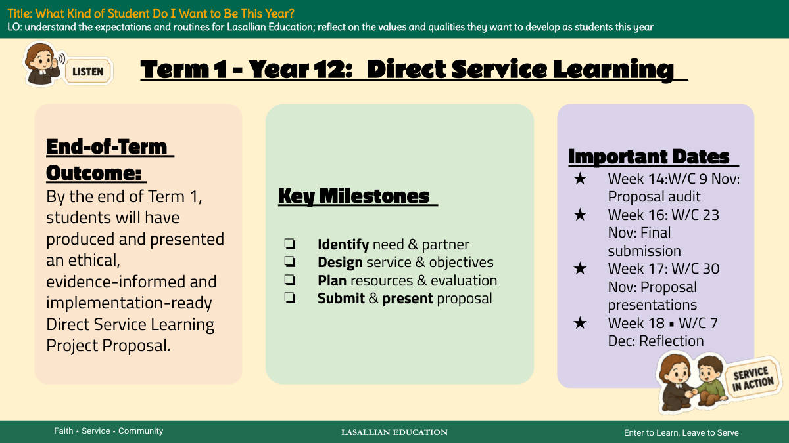
15쪽 · 1학기 봉사학습 과제 안내
라살리안 교육 배우러 들어와서, 섬기러 나간다 믿음 ⭑ 봉사 ⭑ 공동체 제목: 나는 올해 어떤 학생이 되고 싶은가? 학습목표: 라살리안 교육의 기대사항과 규칙을 이해한다. 올해 학생으로서 기르고 싶은 가치와 자질을 돌아본다. 1학기 - 12학년: 직접 봉사 학습 학기말 성과물: 1학기가 끝날 때까지 학생들은 윤리적이고, 근거에 기반하며, 바로 실행할 수 있는 직접 봉사 학습 프로젝트 제안서를 만들어 발표하게 된다. 주요 단계 ❏ 필요한 것과 함께할 파트너를 찾는다 ❏ 봉사 내용과 목표를 설계한다 ❏ 자원과 평가 방법을 계획한다 ❏ 제안서를 제출하고 발표한다 중요한 날짜 ★ 14주차(11월 9일 주): 제안서 점검 ★ 16주차(11월 23일 주): 최종 제출 ★ 17주차(11월 30일 주): 제안서 발표 ★ 18주차(12월 7일 주): 돌아보기
1학기 최종 결과물은 '직접 봉사 학습 프로젝트 제안서'이며, 윤리적·근거 기반·실행 가능이라는 세 조건을 갖춰야 한다.
제안서는 파트너 찾기 → 목표 설계 → 자원·평가 계획 → 제출·발표의 네 단계로 진행되고, 11월 9일 주 점검부터 12월 7일 주 돌아보기까지 날짜가 정해져 있다.
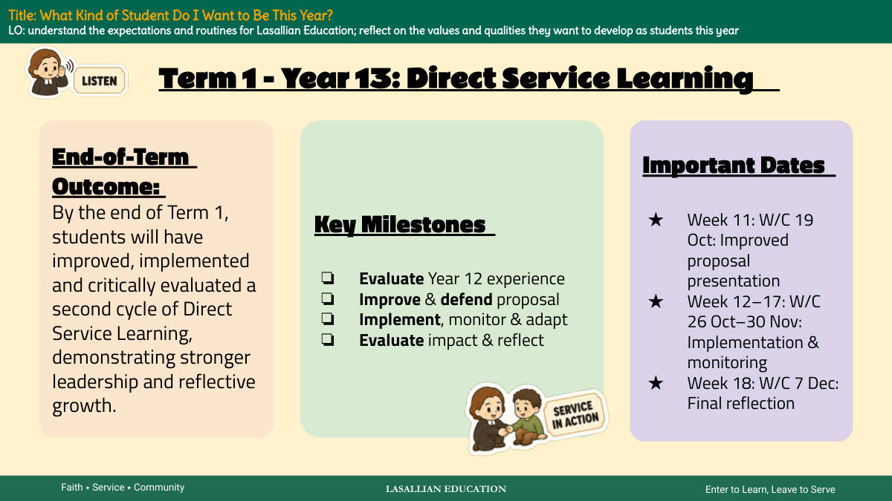
16쪽 · 1학기 목표와 주요 일정
라살리안 교육 배우러 들어와, 섬기러 나간다 믿음 ⭑ 봉사 ⭑ 공동체 제목: 나는 올해 어떤 학생이 되고 싶은가? 학습목표: 라살리안 교육의 기대와 규칙을 이해한다. 올해 학생으로서 기르고 싶은 가치와 자질을 돌아본다.
1학기 - 13학년: 직접 봉사 학습 학기말 성과 1학기가 끝날 때까지 학생들은 직접 봉사 학습의 두 번째 주기를 개선하고, 실행하고, 비판적으로 평가하게 된다. 그리하여 더 강한 리더십과 성찰적 성장을 보여주게 된다.
주요 단계 ❏ 12학년 경험을 평가한다 ❏ 제안서를 개선하고 변론한다 ❏ 실행하고, 점검하고, 조정한다 ❏ 영향을 평가하고 성찰한다
중요한 날짜 ★ 11주차: 10월 19일 주 — 개선된 제안서 발표 ★ 12~17주차: 10월 26일~11월 30일 주 — 실행과 점검 ★ 18주차: 12월 7일 주 — 최종 성찰
13학년 1학기는 봉사 학습의 두 번째 주기다. 12학년 때 한 것을 평가해서 더 낫게 고치는 것이 출발점이다.
날짜가 정해져 있다. 10월 19일 주에 제안서를 발표하고, 10월 26일부터 11월 30일까지 실행하며, 12월 7일 주에 최종 성찰을 쓴다.
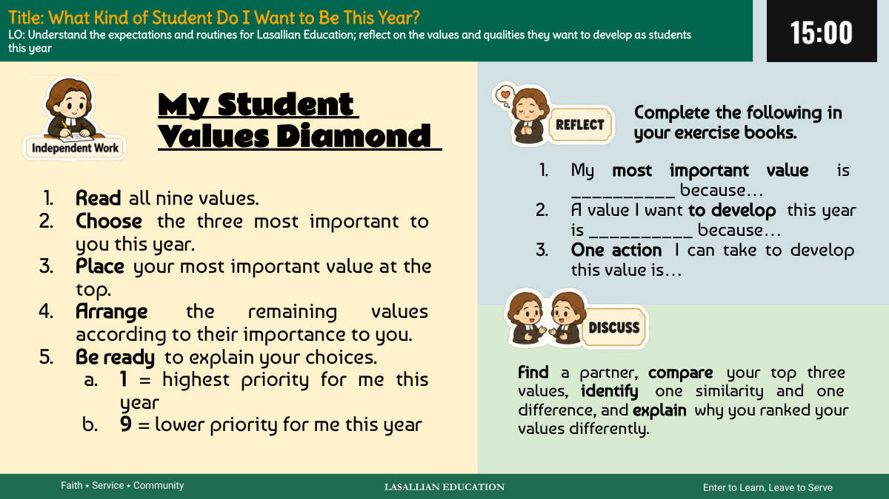
17쪽 · 내 가치관 다이아몬드
라살리안 교육 배우러 들어와, 섬기러 나간다 믿음 ⭑ 봉사 ⭑ 공동체 제목: 올해 나는 어떤 학생이 되고 싶은가? 학습목표: 라살리안 교육의 기대와 규칙을 이해한다. 올해 학생으로서 기르고 싶은 가치와 자질을 되돌아본다. 나의 학생 가치관 다이아몬드 1. 아홉 가지 가치를 모두 읽는다. 2. 올해 나에게 가장 중요한 세 가지를 고른다. 3. 가장 중요한 가치를 맨 위에 놓는다. 4. 나머지 가치들을 중요한 순서대로 배열한다. 5. 왜 그렇게 골랐는지 설명할 준비를 한다. a. 1 = 올해 나에게 가장 높은 우선순위 b. 9 = 올해 나에게 낮은 우선순위 연습장에 다음을 작성한다. 1. 나에게 가장 중요한 가치는 __________ 이다. 왜냐하면… 2. 올해 내가 기르고 싶은 가치는 __________ 이다. 왜냐하면… 3. 이 가치를 기르기 위해 내가 할 수 있는 행동 하나는… 짝을 찾아 각자의 상위 세 가지 가치를 비교하고, 공통점 하나와 차이점 하나를 찾아내고, 왜 서로 다르게 순위를 매겼는지 설명한다.
가치 아홉 개를 1(가장 중요)부터 9(덜 중요)까지 다이아몬드 모양으로 배열하는 활동이다. 상위 세 개를 먼저 고르고 가장 중요한 것을 맨 위에 놓는다.
다이아몬드를 채운 뒤에는 연습장에 세 문장(가장 중요한 가치·기르고 싶은 가치·그 가치를 위한 행동)을 쓰고, 짝과 상위 세 가치를 비교해 공통점 하나와 차이점 하나를 찾아 설명한다.
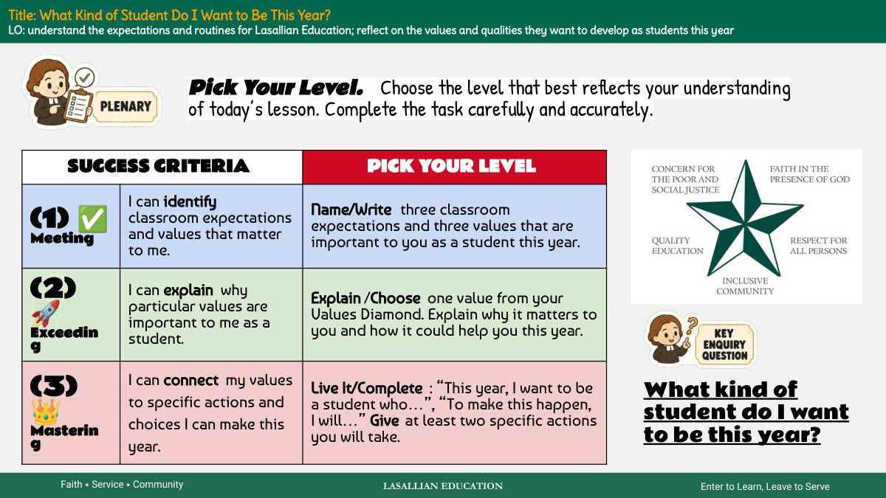
18쪽 · 수준 골라 정리하기
라살리안 교육 배우러 들어와, 섬기러 나간다 믿음 ⭑ 봉사 ⭑ 공동체
성공 기준 — 네 수준을 골라라
(1) ✅ 도달 나는 교실 규칙과 나에게 중요한 가치를 찾아낼 수 있다. 올해 학생으로서 중요한 교실 규칙 세 가지와 가치 세 가지를 적어라.
(2) 🚀 넘어섬 나는 특정 가치가 학생인 나에게 왜 중요한지 설명할 수 있다. 가치 다이아몬드에서 가치 하나를 골라라. 그것이 왜 중요한지, 올해 어떻게 도움이 될지 설명하라.
(3) 👑 숙달 나는 내 가치를 올해 내가 할 수 있는 구체적인 행동과 선택에 연결할 수 있다. 완성하라: "올해 나는 ~한 학생이 되고 싶다", "그렇게 하기 위해 나는 ~할 것이다". 네가 할 구체적인 행동을 최소 두 가지 써라.
수준을 골라라. 오늘 수업을 얼마나 이해했는지 가장 잘 보여주는 수준을 골라라. 과제를 꼼꼼하고 정확하게 끝내라.
제목: 올해 나는 어떤 학생이 되고 싶은가? 학습 목표(LO): 라살리안 교육의 규칙과 일과를 이해한다. 올해 학생으로서 기르고 싶은 가치와 자질을 돌아본다.
올해 나는 어떤 학생이 되고 싶은가?
세 단계는 난이도 순이다 — 찾아내기(도달) → 설명하기(넘어섬) → 행동으로 연결하기(숙달). 자기 수준을 스스로 골라 그 과제를 하면 된다.